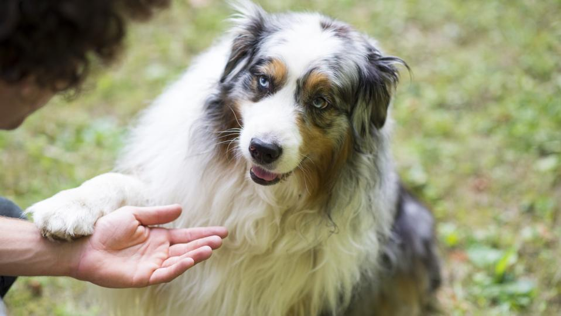

Australian shepherd

Information
The Australian Shepherd is a breed of herding dog from the United States. The name of the breed is technically a misnomer, as it was developed in California in the 19th century, although it has its origins in Asturias, in the northwest of Spain; the breed was unknown in Australia at the time. It is claimed that Australian Shepherds descend from a variety of herding breeds, including collies imported, alongside sheep, from Australia and New Zealand; the breed reportedly took its name from this trade. Originally used solely as a herding dog, the Australian Shepherd has become one of the most popular companion dog breeds in North America.
The Australian Shepherd descends in part from pastoral dogs brought to herd Spanish flocks in North America as early as the 1500s.[1] There is some speculation that these dogs included the Carea Leonés, a mountain sheepdog that can display the eye color and merle coat found in many contemporary Australian Shepherds.[1] It is sometimes claimed that the Basque Shepherd Dog and the Pyrenean Sheepdog were also among the ancestors of the breed.[2][3] The breed as it is known today developed in California in the 19th century, as a sheep herding dog for Californian shepherds.[2][4][3] The Australian Shepherd is believed to have developed from a variety of herding dogs imported to California with sheep imports, including collies from Australia and New Zealand. It was from these ancestors that the breed took its name.[4][3]
The Australian Shepherd spread from California throughout the Western United States where it became extremely popular with ranchers who valued the breed’s sheep working qualities, as well as their ability to handle cattle and other livestock.[3] A purely working breed for over a century, the Australian Shepherd was virtually unknown outside of the livestock industry until the mid-20th century when the breed was popularised by Jay Lister, a rodeo performer, at rodeos across the western states with his Australian Shepherds performing all manner of tricks.[5] A breed club was soon formed to promote the breed, the Australian Shepherd Club of America, and kennel club recognition followed in 1979 when the breed was recognised by the United Kennel Club.[3][6] The breed was subsequently recognised by the American Kennel Club in the 1990s and later the Fédération Cynologique Internationale.[2][3]
More: https://en.wikipedia.org/wiki/Australian_Shepherd.
Fun facts
The Australian Shepherd, or Aussie for short, is one of the most popular breeds in the United States. Their boundless energy and high intelligence make them fun, entertaining, and hardworking pets and assistance dogs. Here are some interesting facts about the Australian Shepherd. The Australian Shepherd probably came from the Basque region of Spain. Basque shepherds first took their dogs with them to Australia and then to the United States, so Americans called the dogs Australian Shepherds. The breed, as we know it today, was developed solely in the United States. American ranchers loved Australian Shepherds because they were great herders, but Aussies rose to fame among the general population because of their frequent appearances in rodeos. Not only could Aussies help herd the bulls, they could also perform tricks.
More: https://www.akc.org/expert-advice/dog-breeds/australian-shepherd-facts/.
How to take care of Australian shepherd?
https://www.thefarmersdog.com/digest/australian-shepherd-care-guide/
https://www.vieravet.com/services/dogs/breeds/australian-shepherd